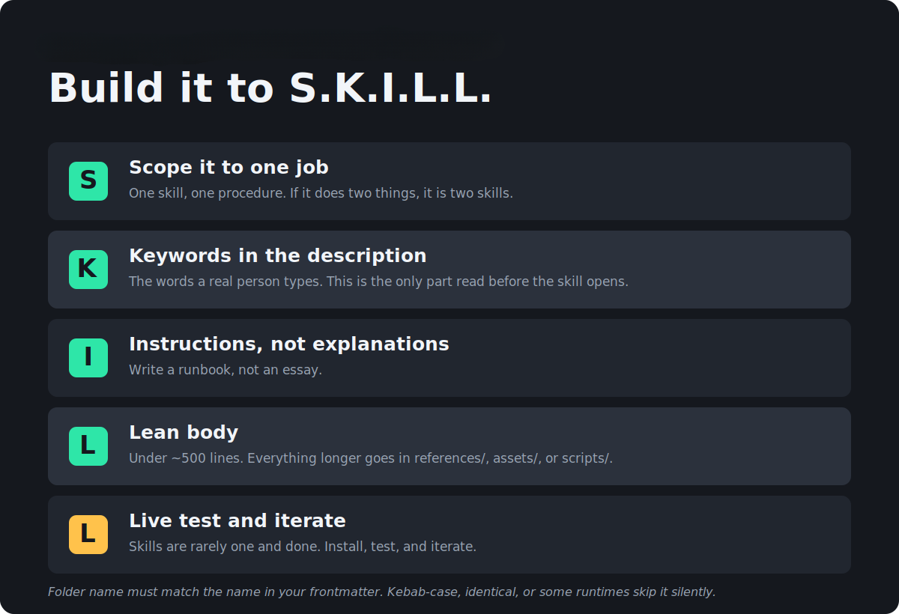

Launch resource · Guide & slide deck
Build it to S.K.I.L.L.
Five rules for writing agent skills that actually fire, plus working examples for M365 Copilot, Copilot Studio, Cowork, and Power Platform.

Why this, why now
Most skills that "don't work" never actually ran. The agent reads only your
name and description before deciding whether to open the file,
so a perfect 4,000-word body is invisible if the description never matches. These five
rules are what closes that gap.
If you're a Curious Professional
You don't need to write skills yourself to benefit from this. Understanding the difference between a one-off prompt and a written-down skill explains why some AI tools at work feel reliable and others feel like a coin flip.
If you're a Microsoft Maker
This is directly applicable in Copilot Studio, Cowork, and Power Platform today. The framework below is the difference between an agent that fires reliably and one you keep re-explaining things to.
If you're a Technical Builder
Skills are an open standard (see "Where skills run" below). The mental model — instructions vs. knowledge vs. tools vs. skills — generalizes past any one vendor's implementation.
A prompt is something you say. A skill is something you decide.
A prompt lives in one conversation. It's different every time you type it, nobody else has it, and there's no version or owner. A skill lives in a file, on a shelf. It's identical every time it runs, shared with the whole team, versioned, and reviewable. Same words, completely different thing.
The framework
-
Scope it to one job
One skill, one procedure. If it does two things, it is two skills. If you cannot describe what your skill does in one sentence without using "and," split it.
-
Keywords in the description
The description is the only part read before the skill opens. Load it with the words a real person would type, not the tidy internal name for the process. Third person, start with "Use when," one to three sentences, under about 500 characters.
-
Instructions, not explanations
Write a runbook, not an essay. The agent is not being persuaded, it is being told. Count the hedges in your draft — every "generally," "usually," and "use your judgment" is a decision you pushed back onto the model.
-
Lean body
Under about 500 lines, roughly 5,000 tokens — the whole body loads when the skill activates. Anything longer goes in
references/(background it might look up),assets/(templates it builds from), orscripts/(the same answer every time). Cheap to have, expensive to load — bias toward the subfolders. -
Live test and iterate
Skills are rarely one and done. Test the trigger before you test the output — ask for the thing five different ways and confirm it actually activates each time. Half of all skill debugging is discovering it never fired at all.
The one that isn't a letter: the folder name must exactly match the
name in your frontmatter — kebab-case, lowercase, hyphens, max 64
characters. If they differ, some runtimes skip the skill silently. No error, no
warning, nothing in the logs.
What's actually in a skill
Only SKILL.md is required. The other three folders are optional, and that's where the leverage is.
client-qbr/
├── SKILL.md
├── references/
│ ├── account-health-definitions.md
│ └── qbr-writing-guide.md
├── assets/
│ ├── qbr-outline-template.md
│ └── risk-register-table.md
└── scripts/
├── calculate_burn.py
└── validate_qbr.py| Folder | The question | What goes there |
|---|---|---|
references/ | Is this background it might look up? | Policies, playbooks, style guides, thresholds |
assets/ | Is this something it builds the output FROM? | Templates, boilerplate, layouts |
scripts/ | Does this need the same answer every time? | Math, validation, parsing |
How much do you actually need?
Start at level 1. Climb only when the job forces you to.
| Level | Adds | When |
|---|---|---|
| 1 | SKILL.md only | You already know the process, you just don't want to retype it. |
| 2 | + references/ | The process needs knowledge attached: a policy, a playbook, a style guide. |
| 3 | + assets/ | The output has to look like something: a branded deck, a template. |
| 4 | + scripts/ | A step has to be right every time: math, thresholds, validation. |
Most skills never leave level 1. That is not a failure, that is the point. A 500-line reference doc nobody updates is worse than no reference doc, because the agent is confidently following a stale policy.
Where skills run
Skills are an open standard. The format came out of Anthropic and is published at agentskills.io. The same folder runs unchanged across Microsoft 365 Copilot, Copilot Studio, Copilot Cowork, Copilot in the Office apps, SharePoint, GitHub Copilot, VS Code, Claude, Cursor, and 20-odd other agents. What differs is scope:
| Surface | Scope |
|---|---|
| Copilot Cowork, Copilot in Excel | Personal |
| Copilot in SharePoint | Site |
| Copilot Studio | Agent |
| Dataverse business skills | Organization |
| GitHub Copilot, VS Code | Repo or personal |
Exact paths and limits move. Check current docs.
When not to use a skill
| If it… | It's actually a… |
|---|---|
| Needs to call a system | Tool. Skills are instructions — they can't hit your API. |
| Is a one-off request | Prompt. The whole value of a skill is repetition. |
| Is reference material | Knowledge. A skill is a procedure, not a product catalog. |
| Defines who the agent is | Instructions. Tone and persona belong in the always-on box. |
Before you install someone else's
A skill is a dependency. Treat it like one:
- Review before use — read the
SKILL.md, the scripts, and the resources. Confirm the script does what it says. - Trust the source — skill instructions go straight into the agent's context. Watch for typosquatted names.
- Sandbox execution — anything with
scripts/should run isolated, with filesystem and network limits. - Log what loaded — which skills, which resources, which scripts. That's your audit trail.
The takeaway
Stop re-prompting. Write your process down once, in a file. Picked up when it's relevant, ignored when it isn't. Portable across products. Versioned like code. Governed if you need it to be.
The S.K.I.L.L. framework and companion deck are original material from April Dunnam. The underlying skills file format is an open standard published at agentskills.io.